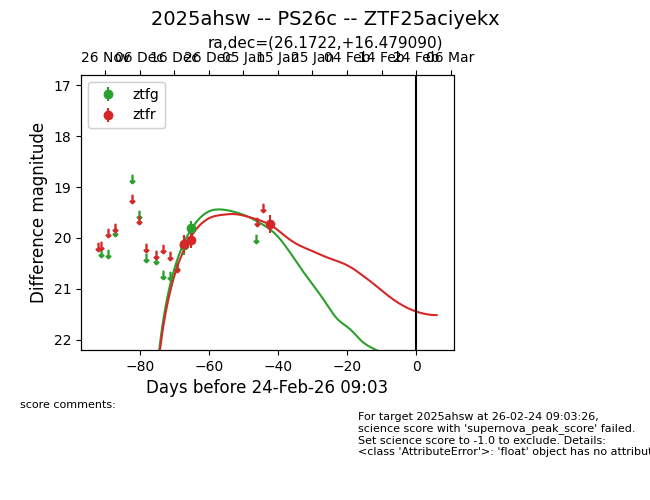
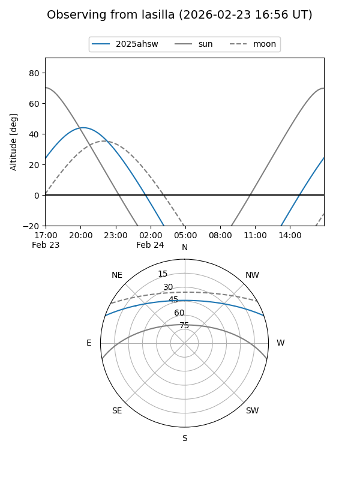
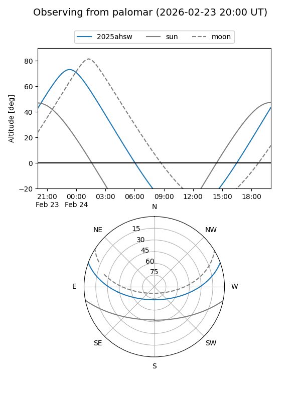
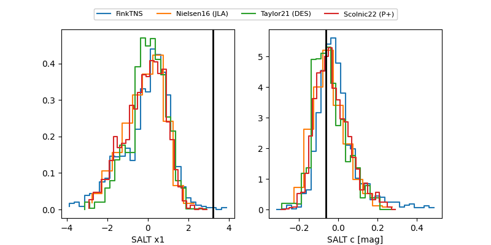

2025ahsw
Target 2025ahsw at 2026-01-14 10:47
Aliases and brokers:
FINK: link
Lasair: link
ALeRCE: link
TNS: link
YSE: link
alt names
ZTF25aciyekx (ztf,fink_ztf)
2025ahsw (tns,yse)
PS26c (panstarrs)
Coordinates:
equatorial (ra, dec) = 26.1722,+16.47909
equatorial (HMS+DMS) = 01:44:41.32,+16:28:44.72
galactic (l, b) = (140.9719,-44.51934)
Flags:
Photometry:
last ztfg=19.81, ztfr=19.73
2 ztfg, 3 ztfr detections
Lightcurve

Visibility


Additional plots
